CONDORIX TICKETS MET KORTING
Ben jij op zoek naar tickets voor Condorix met korting? De beste korting heb je te pakken met de Early Bird tickets. Reserveer je tickets minimaal 7 dagen van tevoren en ontvang 3 euro korting.
Exclusieve Ervaringen
Alleen bij Condorix
Met korting naar Condorix
Een leuk dagje uit met een leuke prijs. Met korting naar Condorix kan gewoon via deze weg! Beslis vroeg en profiteer van korting. Als je 7 dagen van tevoren reserveert, ontvang je 3 euro korting per kaartje.

Dagje uit met korting
Waarom wij een dagje uit met korting aanbieden?
Omdat je ons helpt door van tevoren te reserveren. Hoe beter wij weten hoeveel gasten wij gaan ontvangen, hoe beter wij bijvoorbeeld onze producten kunnen inkopen. En zo zorgen we samen voor minder waste en dus beter voor de natuur!
Voorwaarden aankoop Early Bird tickets
De Early Bird korting is alleen van toepassing bij aanschaf van de speciale online Early Bird tickets. De korting is niet van toepassing op andere (reeds aangekochte) tickets.
Het Early Bird ticket is niet inwisselbaar tegen contanten en/of andere diensten van Condorix.
De Early Bird korting is alleen van toepassing op reserveringen welke minimaal 7 dagen voor je bezoek gemaakt zijn.
Het kan voorkomen dat een dag uitverkocht is (OP=OP), dus zorg dat je tijdig jouw reservering plaatst.
Reeds gekochte Early Bird tickets kunnen niet worden verzet of geannuleerd.
De Early Bird ticket kan niet worden gecombineerd met andere aanbiedingen of kortingen.
Op korte termijn Condorix bezoeken?
Kun jij geen week wachten en wil je eerder naar Condorix? Reserveer dan een dagticket op de datum naar keuze via de ticketshop.
Ontdek Onze Dieren
Leer meer over de bijzondere dieren die je bij Condorix kunt ontmoeten
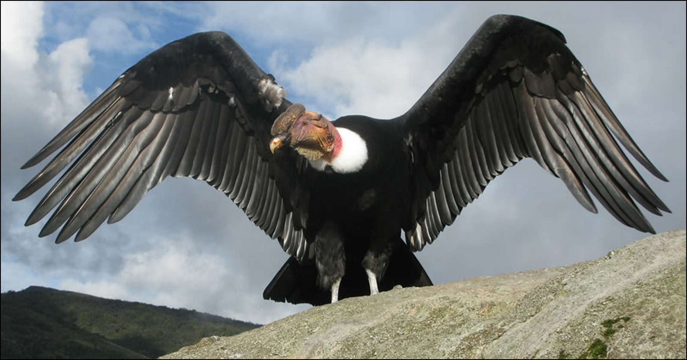
KwetsbaarAndes Condor ⭐
Vultur gryphus
De Andes condor is een van 's werelds grootste vliegende vogels met een spanwijdte tot 3,3 meter! Deze majestueuze roofvogel is het symbool van Condorix en kan tot 17.000 voet hoog vliegen in de Andes.
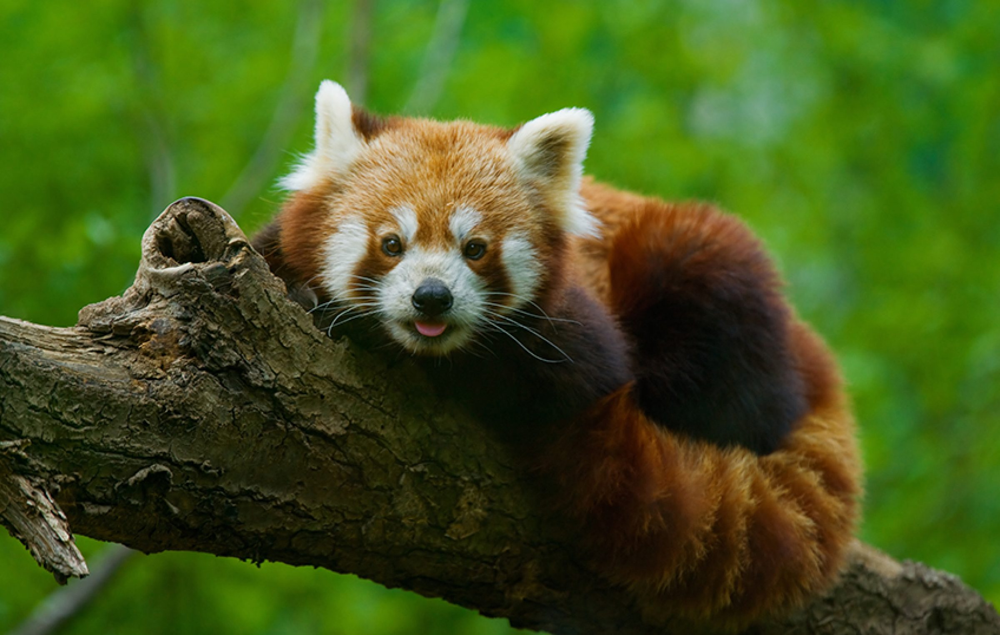
BedreigdRode Panda
Ailurus fulgens
De rode panda is een klein zoogdier dat voorkomt in de oostelijke Himalaya en zuidwestelijk China. Ze zijn uitstekende klimmers en leven voornamelijk in bomen.
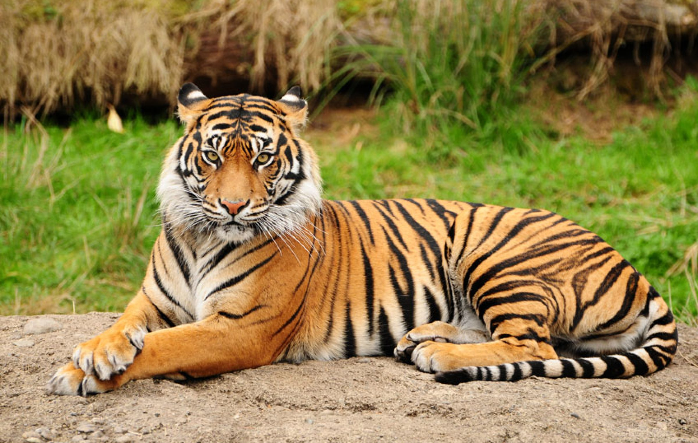
BedreigdBengaalse Tijger
Panthera tigris tigris
De Bengaalse tijger is de meest voorkomende tijgersoort. Deze majestueuze roofdieren kunnen tot 3 meter lang worden en wegen tot 250 kg.
 Kwetsbaar
Kwetsbaar
Afrikaanse Olifant
Loxodonta africana
De Afrikaanse olifant is het grootste landdier ter wereld. Deze intelligente dieren leven in sociale groepen en kunnen tot 70 jaar oud worden.
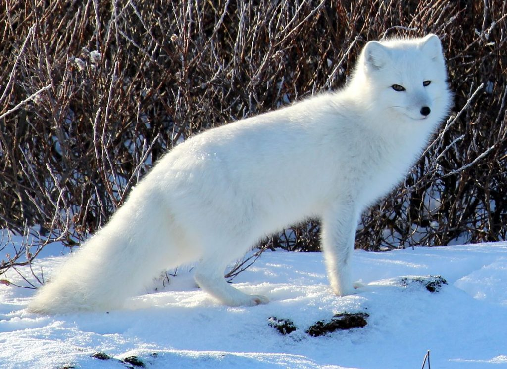
VeiligPoolvos
Vulpes lagopus
De poolvos is perfect aangepast aan het leven in extreme kou. Hun dikke vacht verandert van kleur met de seizoenen: bruin in de zomer, wit in de winter.
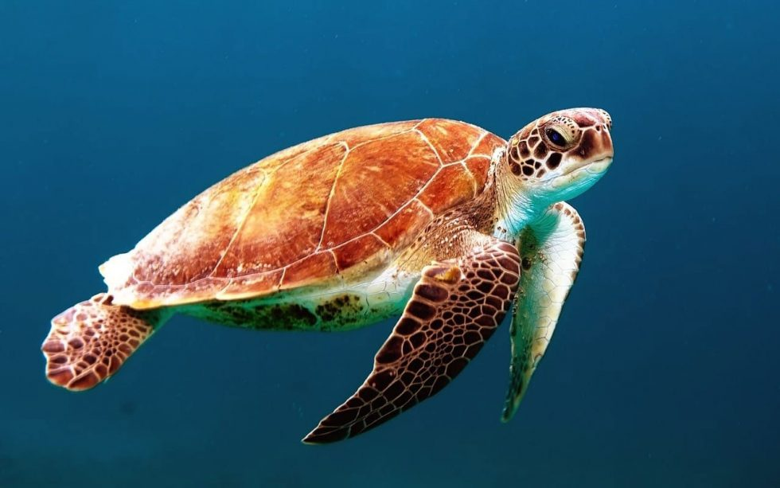
KritiekKaretschildpad
Eretmochelys imbricata
Deze prachtige zeeschildpad staat bekend om zijn gekleurde schild. Ze kunnen tot 50 jaar oud worden en zwemmen duizenden kilometers door de oceanen.
 Kwetsbaar
Kwetsbaar
Koala
Phascolarctos cinereus
Koala's zijn iconische buideldieren uit Australië. Ze slapen tot 20 uur per dag en eten alleen eucalyptusbladeren, wat weinig energie geeft.
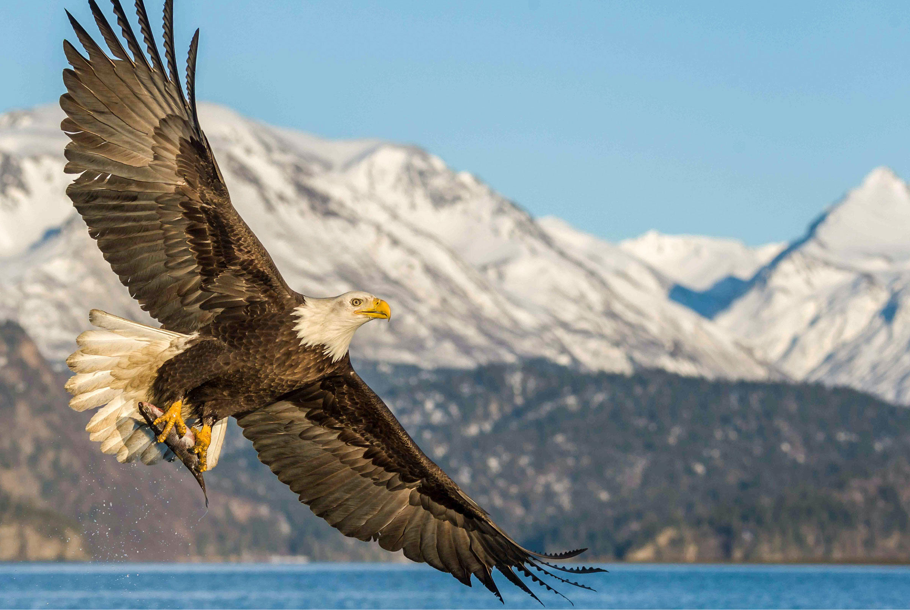
VeiligAmerikaanse Zeearend
Haliaeetus leucocephalus
De Amerikaanse zeearend is het nationale symbool van de Verenigde Staten. Deze machtige roofvogel heeft een spanwijdte tot 2,3 meter en jaagt voornamelijk op vis.
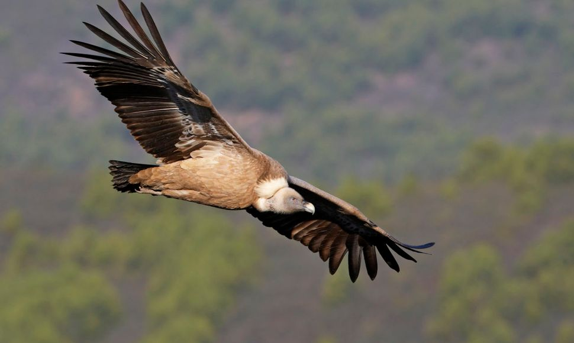
KwetsbaarVale Gier
Gyps fulvus
De vale gier is een imposante grote gier met een spanwijdte tot 2,8 meter. Deze aasetende vogel speelt een belangrijke rol in het ecosysteem door kadavers op te ruimen.
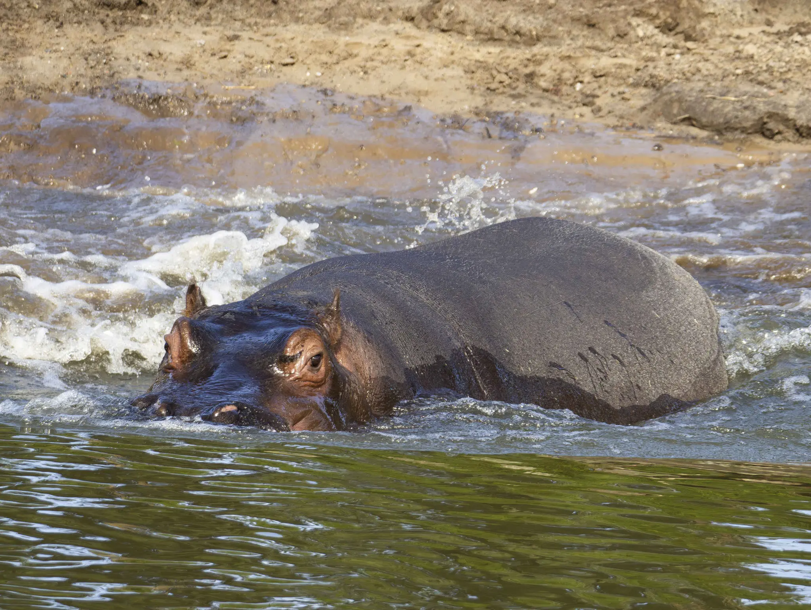
KwetsbaarNijlpaard
Hippopotamus amphibius
Het nijlpaard is een van de grootste landzoogdieren ter wereld. Overdag verblijven ze in het water en 's nachts gaan ze op zoek naar gras om te eten.
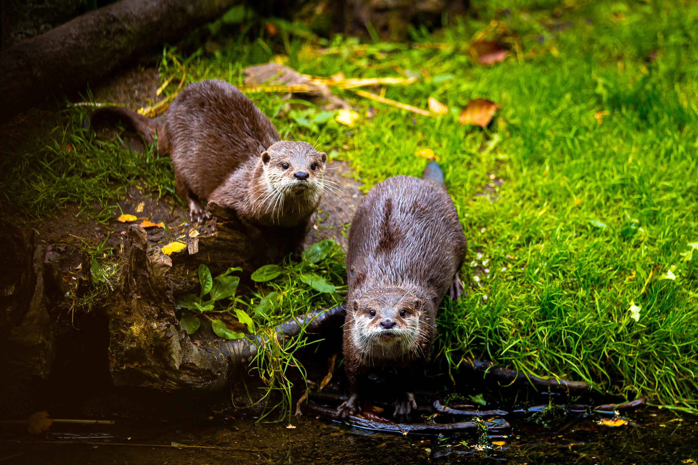
KwetsbaarKleinklauw Otter
Aonyx cinereus
De kleinste ottersoort ter wereld, bekend om hun speelse gedrag en handige pootjes waarmee ze voedsel vasthouden en eten.
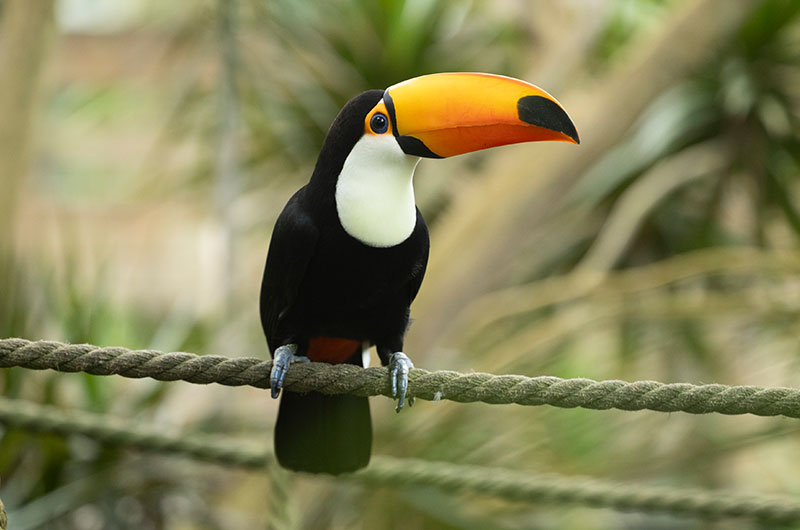
Niet bedreigdToekan
Ramphastos toco
De toekan is bekend om zijn enorme, kleurrijke snavel die tot een derde van de totale lichaamslengte kan zijn. Deze vogel leeft in de tropische regenwouden.
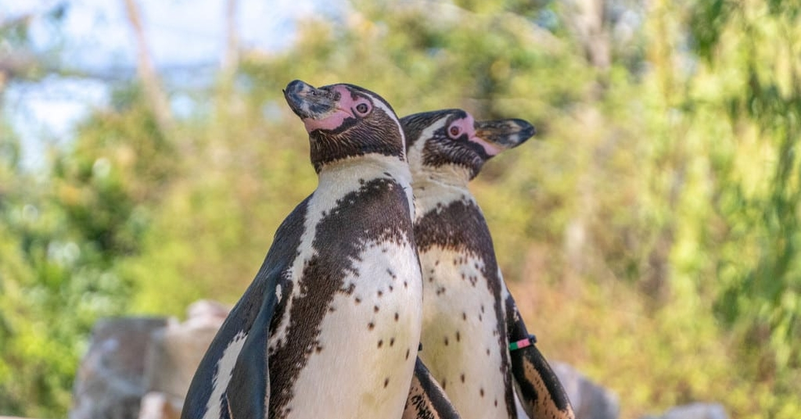
GevoeligHumboldtpinguïn
Spheniscus humboldti
Deze charmante vogel leeft in kolonies langs de kust van Zuid-Amerika. Pinguïns kunnen niet vliegen maar zijn uitstekende zwemmers.
 Niet bedreigd
Niet bedreigd
Wasbeer
Procyon lotor
De wasbeer is een intelligent en aanpassingsgericht dier, bekend om hun "wasgedrag" waarbij ze hun voedsel in water dompelen voor het eten.
 Kwetsbaar
Kwetsbaar
Leeuw
Panthera leo
De koning der dieren is het enige katachtige dat in groepen leeft. Leeuwen worden gekenmerkt door de indrukwekkende manen van de mannetjes.
 Niet bedreigd
Niet bedreigd
Japanse Makaak
Macaca fuscata
Ook wel sneeuwapen genoemd, deze primaat leeft verder noordelijk dan welke andere aap dan ook. Ze staan bekend om hun ontspannende baden in warme bronnen.
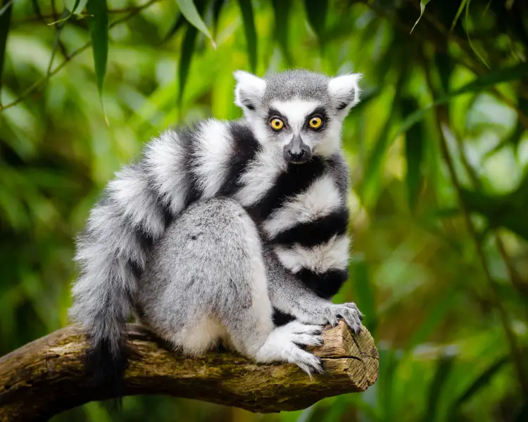
BedreigdRingstaartmaki
Lemur catta
De ringstaartmaki is herkenbaar aan zijn opvallende zwart-wit gestreepte staart. Deze sociale primaat leeft in groepen en is alleen te vinden op Madagaskar.
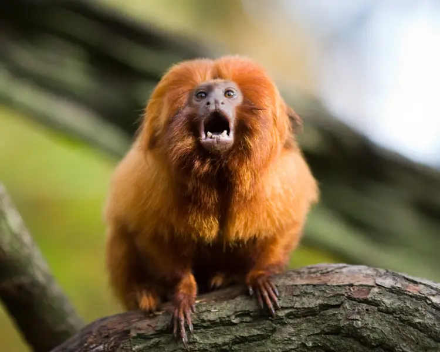
BedreigdGoudleeuw Aapje
Leontopithecus rosalia
Dit kleine aapje heeft een prachtige goudkleurige vacht die lijkt op een leeuwenmanen. Ze leven in de bedreigde Atlantische regenwouden van Brazilië.
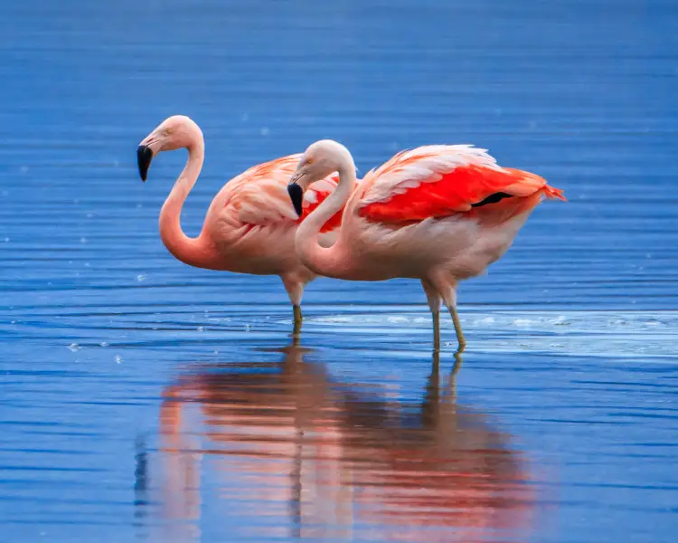
GevoeligChileense Flamingo
Phoenicopterus chilensis
Deze elegante vogel met roze veren leeft in grote groepen bij zoutmeren. Hun kleur komt van de garnalen en algen die ze eten.
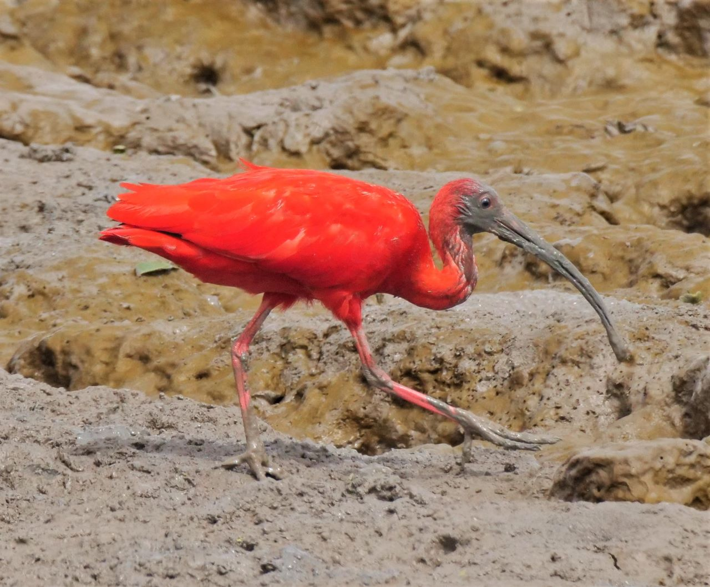
Niet bedreigdRode Ibis
Eudocimus ruber
Deze spectaculaire vogel heeft felrode veren dankzij de garnalen in hun dieet. Ze nestelen in grote kolonies in mangrovebossen.
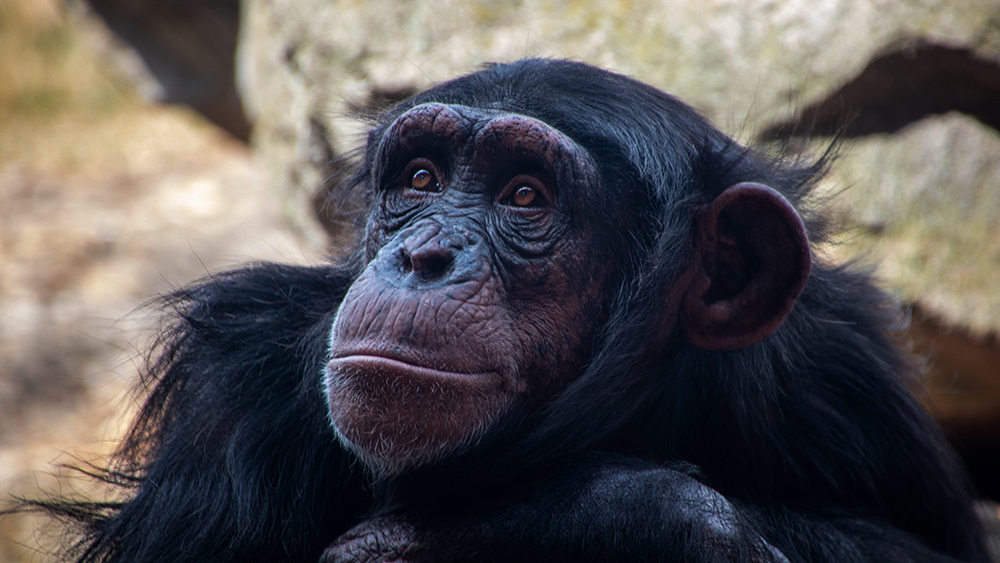
BedreigdChimpansee
Pan troglodytes
Chimpansees zijn onze naaste levende verwanten en delen 98% van ons DNA. Ze zijn zeer intelligent, kunnen gereedschap gebruiken en hebben complexe sociale structuren.
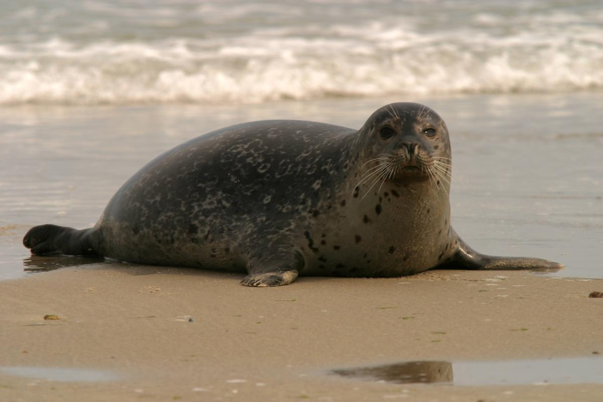
Niet bedreigdZeehond
Phoca vitulina
De gewone zeehond is een behendig zwemmer die in kustwateren leeft. Ze kunnen tot 30 minuten duiken en eten vis, schaaldieren en inktvissen.
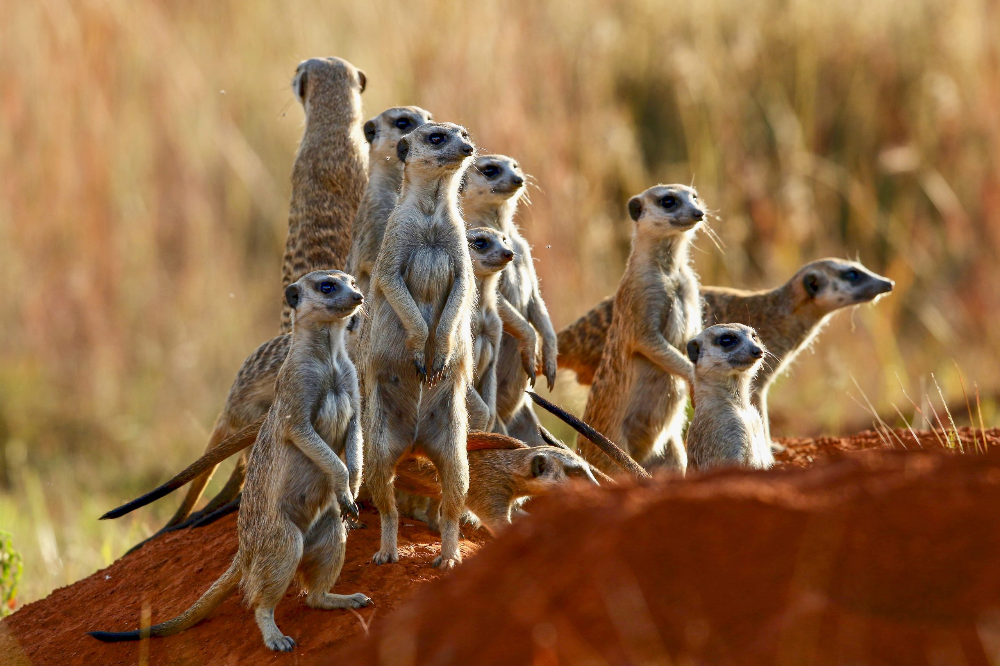
Niet bedreigdStokstaartje
Suricata suricatta
Deze sociale dieren leven in groepen tot 30 individuen. Bekend om hun kenmerkende rechtopstaande houding waarbij ze de omgeving in de gaten houden.
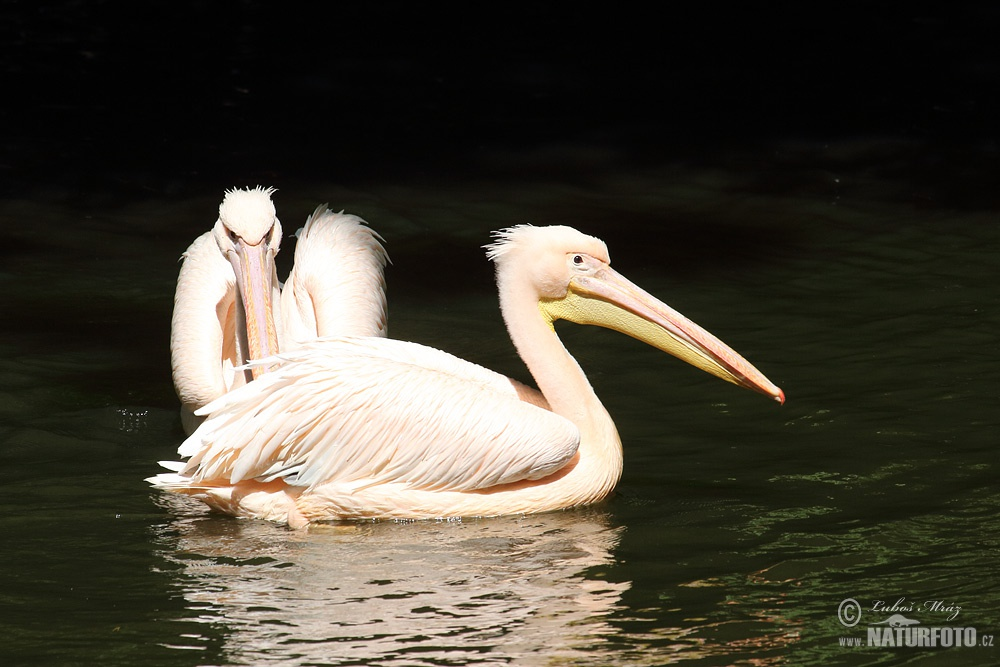
Niet bedreigdRoze Pelikaan
Pelecanus onocrotalus
Een grote watervogel met een kenmerkende keelzak. Ze vissen vaak samen in groepen en kunnen tot 10 liter water in hun keelzak dragen.
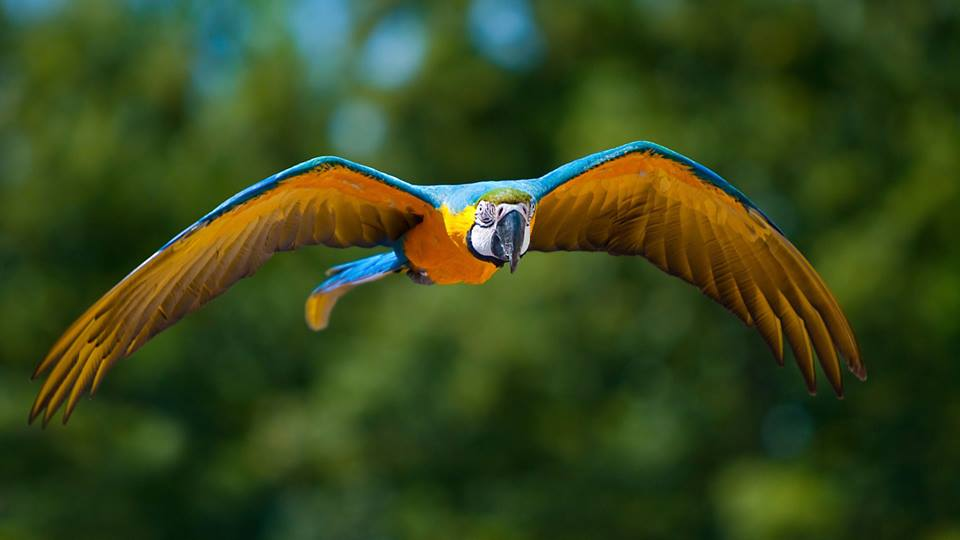
Niet bedreigdBlauwgele Ara
Ara ararauna
Een grote, kleurrijke papegaai met prachtig blauw en geel gevederte. Ze kunnen tot 60 jaar oud worden en zijn bekend om hun luide kreten.
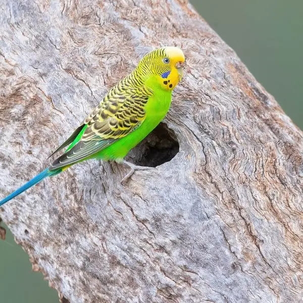
Niet bedreigdGrasparkiet
Melopsittacus undulatus
Deze kleine, gezellige papegaai is een populair huisdier. In het wild leven ze in grote zwermen in Australië.
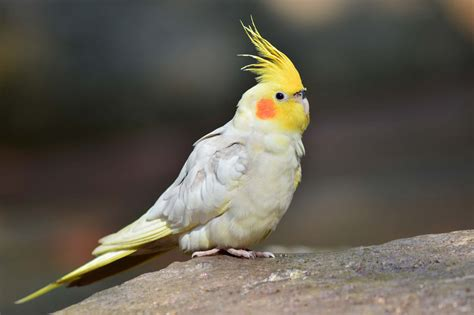
Niet bedreigdValkparkiet
Nymphicus hollandicus
Herkenbaar aan hun opvallende kuif en oranje wangvlekken. Deze vogels zijn sociale dieren die in kleine groepen leven.
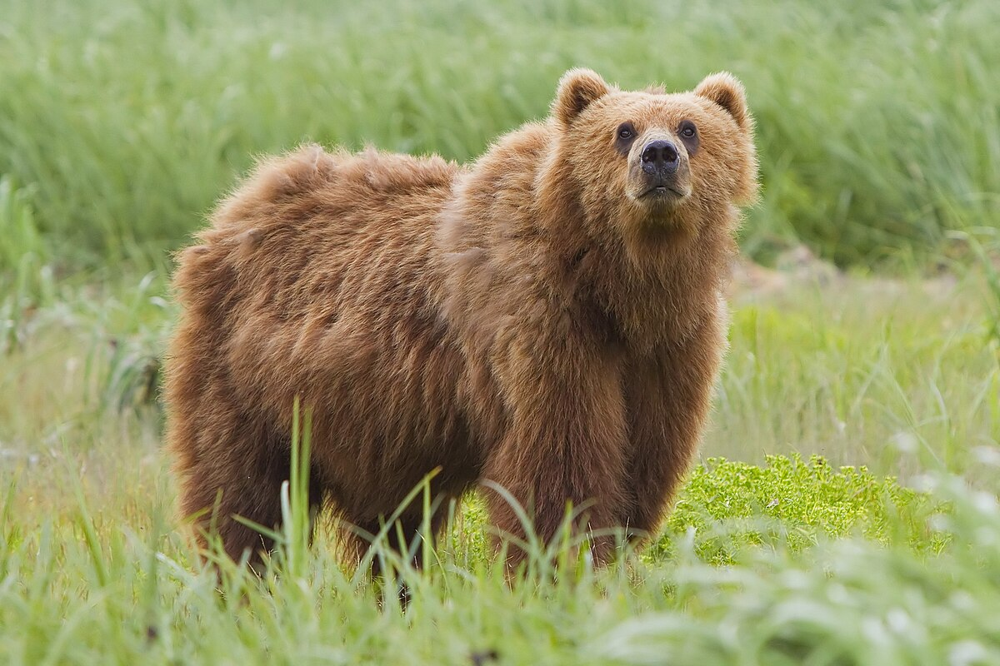
Niet bedreigdBruine Beer
Ursus arctos
Een krachtig roofdier dat over het noordelijk halfrond verspreid leeft. Ze zijn alleseters en kunnen tot 350 kg wegen.
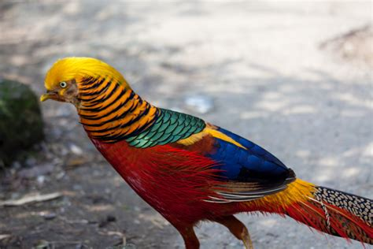
Niet bedreigdGoudfazant
Chrysolophus pictus
Een prachtig gekleurde vogel waarbij het mannetje opvalt door zijn gouden kuif en rode borst. Oorspronkelijk uit China.
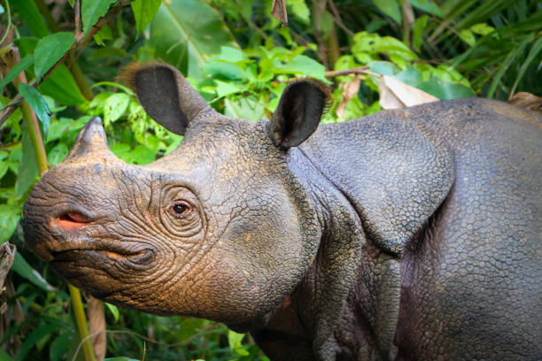
Kritiek bedreigdJavaanse Neushoorn
Rhinoceros sondaicus
Een van de zeldzaamste grote zoogdieren ter wereld met slechts enkele tientallen exemplaren in het wild. Ze hebben één hoorn en een gevouwen huid.
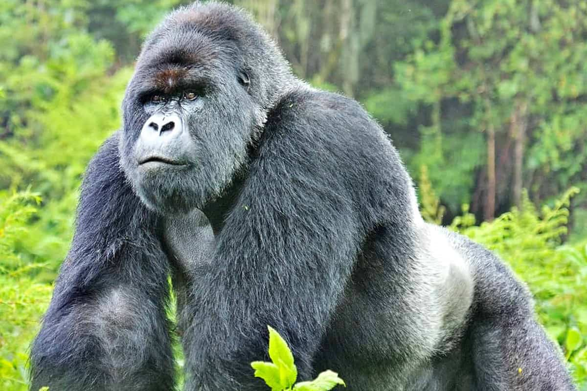
BedreigdBerggorilla
Gorilla beringei beringei
De grootste nog levende primaat, die slechts in de bergwouden van Centraal-Afrika voorkomt. Ze leven in families geleid door een zilverrug.
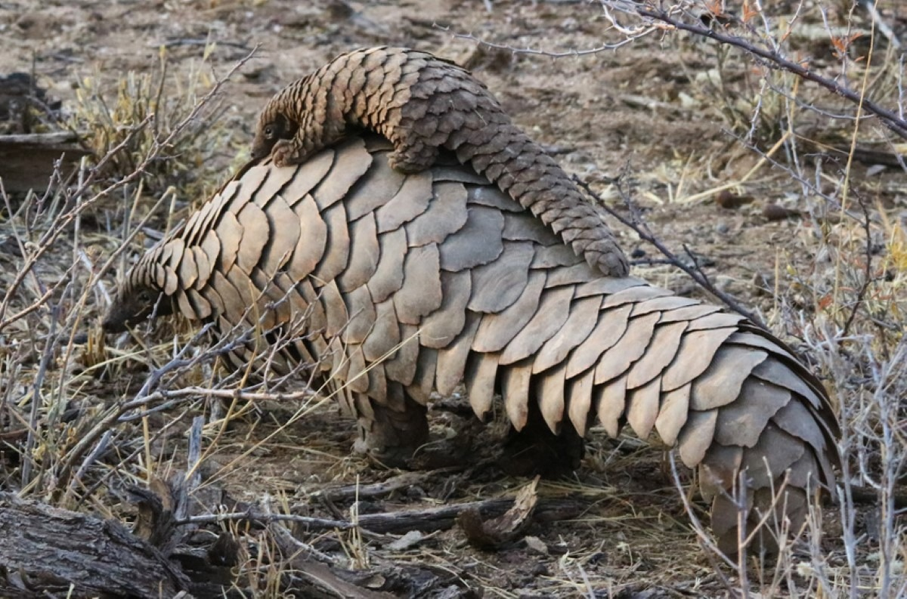
Kritiek bedreigdSchubdier
Manis
Het meest illegaal verhandelde zoogdier ter wereld. Bedekt met keratineschubben en rolt zich op tot een bal bij gevaar.
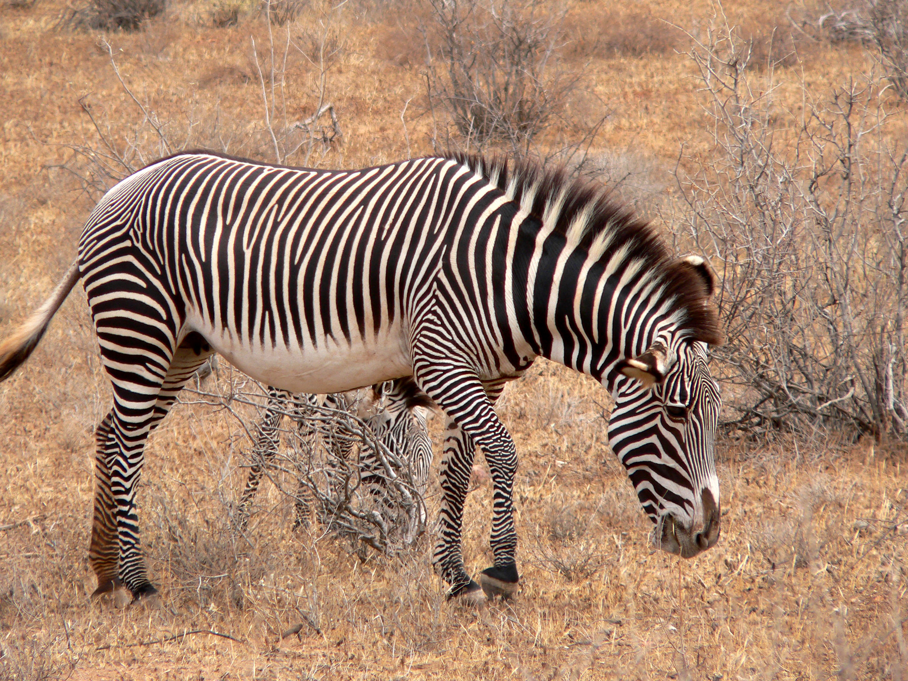
GevoeligZebra
Equus quagga
Bekend om hun unieke zwart-witte strepenpatroon. Elke zebra heeft een uniek strepenpatroon, net als een vingerafdruk.
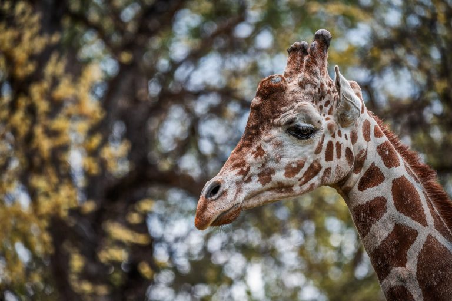
KwetsbaarGiraf
Giraffa camelopardalis
Het langste landdier ter wereld met een nek van 2 meter lang. Ze kunnen bladeren eten die voor andere dieren onbereikbaar zijn.
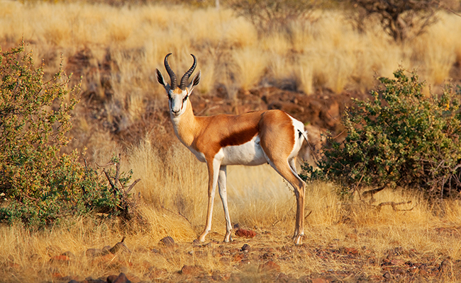
Niet bedreigdSpringbok Antilope
Antidorcas marsupialis
Deze snelle loper kan sprongen maken tot 4 meter hoog. Ze leven in kuddes op de Afrikaanse savanne.
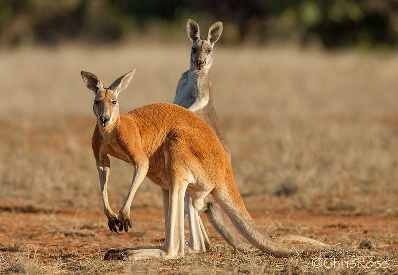
Niet bedreigdRode Kangoeroe
Macropus rufus
Het grootste buideldier ter wereld. Ze kunnen met één sprong 9 meter ver en 3 meter hoog springen.
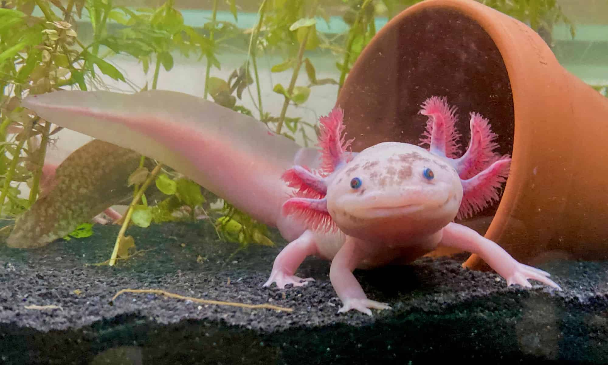
Kritiek bedreigdAxolotl
Ambystoma mexicanum
Een unieke salamander die zijn hele leven in larvenstadium blijft. Ze kunnen verloren lichaamsdelen regenereren, inclusief delen van het brein.
 Kwetsbaar
Kwetsbaar
IJsbeer
Ursus maritimus
Het grootste landroofdier ter wereld. IJsberen zijn afhankelijk van zee-ijs om te jagen op zeehonden en worden bedreigd door klimaatverandering.
 Niet bedreigd
Niet bedreigd
Jaarvogel
Oriolus oriolus
Een trekvogel met opvallend gele en zwarte veren bij het mannetje. Ze bouwen hangend bekervorming nesten in bomen.
 Bedreigd
Bedreigd
Tijger
Panthera tigris
De grootste katachtige ter wereld. Hun kenmerkende strepenpatroon is uniek voor elk individu en dient als camouflage tijdens het jagen.
Bedreigd
Okapi
Okapia johnstoni
Lijkt op een kruising tussen zebra en giraf, maar is nauw verwant aan de giraf. Leeft alleen in de regenwouden van Congo.
Niet bedreigd
Groene Leguaan
Iguana iguana
Een grote hagedis die uitstekend kan klimmen en zwemmen. Ze zijn herbivoor en kunnen tot 2 meter lang worden.
 Niet bedreigd
Niet bedreigd
Monarchvlinder
Danaus plexippus
Bekend om hun spectaculaire jaarlijkse migratie van duizenden kilometers. Hun oranje en zwarte kleuren waarschuwen roofdieren dat ze giftig zijn.
Niet bedreigd
Violet Bidsprinkhaan
Empusa fasciata
Een prachtig insect met opvallende paarse kleuren. Ze hebben een karakteristieke bidhouding en jagen op andere insecten.
 Kwetsbaar
Kwetsbaar
Reuzenschildpad
Aldabrachelys gigantea
Een van de langstlevende dieren ter wereld, ze kunnen meer dan 100 jaar oud worden. Deze enorme schildpadden kunnen tot 250 kg wegen.
Niet bedreigd
Capibara
Hydrochoerus hydrochaeris
Het grootste knaagdier ter wereld. Deze sociale dieren leven in groepen nabij water en zijn uitstekende zwemmers.
Niet bedreigd
Wrattenzwijn
Phacochoerus africanus
Herkenbaar aan de grote wratachtige uitsteeksels op hun kop. Bij gevaar rennen ze weg met hun staart rechtop als een antenne.
Niet bedreigd
Vleerhond
Pteropus
Grote vleermuizen met een vosachtig gezicht. Ze eten voornamelijk fruit en spelen een belangrijke rol bij de bestuiving en zaadverspreiding.
Bedreigd
Tapir
Tapirus terrestris
Een prehistorisch uitziend dier met een grijpbare slurf. Ze zijn nauw verwant aan paarden en neushoorns en spelen een belangrijke rol in het verspreiden van zaden.
Niet bedreigd
Kerkuil
Tyto alba
Een nachtelijke roofvogel met uitzonderlijk gehoor. Hun hartvormige gezichtsschijf helpt geluid naar hun oren te leiden.
Kritiek bedreigd
Europese Aal
Anguilla anguilla
Deze vis maakt een ongelooflijke migratie van Europa naar de Sargassozee om te paaien. Hun populatie is dramatisch gedaald.
Niet bedreigd
Kompasskwal
Chrysaora hysoscella
Een prachtige kwal met 24 tentakels en een kompasachtig patroon op de koepel. Ze zweven door de oceaan en vangen plankton.
Niet bedreigd
Kogelvis
Tetraodontidae
Kan zich opblazen tot een bal wanneer bedreigd. De meeste soorten bevatten een dodelijk gif genaamd tetrodotoxine.
Niet bedreigd
Bergduivel
Sebastes norvegicus
Een diepe zee vis met opvallende rode kleur. Ze kunnen zeer oud worden, sommige exemplaren leven meer dan 100 jaar.
Gevoelig
Vogelbekdier
Ornithorhynchus anatinus
Een van de weinige giftige zoogdieren en een van de enige zoogdieren die eieren leggen. Dit unieke dier heeft een eendenbek en bevervacht.
Niet bedreigd
Blauwe Zeedraak
Glaucus atlanticus
Een kleine maar spectaculaire zeenaaktslak met elektrisch blauwe en zilveren kleuren. Ze drijven ondersteboven op het wateroppervlak.
Niet bedreigd
Rafelvis
Pterois
Een prachtige maar giftige vis met lange straalvormige vinnen. Hun steek is zeer pijnlijk en kan gevaarlijk zijn voor mensen.
Bedreigd
Tasmaanse Duivel
Sarcophilus harrisii
Het grootste roofzuchtige buideldier ter wereld. Bekend om hun luide, angstaanjagende geluid en krachtige kaken.
Niet bedreigd
Wombat
Vombatus ursinus
Een graafbuideldier met korte poten en een gedrongen lichaam. Ze produceren kubusvormige uitwerpselen en zijn expert tunnelgravers.
Niet bedreigd
Kraanvogel
Grus grus
Een grote trekvogel bekend om hun spectaculaire baltsrituelen met sprongen en buigingen. Ze maken lange migratietrekken.
Kwetsbaar
Helmkasuaris
Casuarius casuarius
Een grote, niet vliegende vogel met een kenmerkende helm op het hoofd. Ze kunnen gevaarlijk zijn vanwege hun scherpe klauwen.
Kwetsbaar
Zeekoe
Trichechus manatus
Een groot, vredig zeezoogdier dat zich voedt met waterplanten. Ze zwemmen langzaam en kunnen tot 600 kg wegen.
Niet bedreigd
Vleermuisoorvos
Otocyon megalotis
Een kleine vos met enorme oren die tot 14 cm lang kunnen worden. Deze oren helpen bij het reguleren van lichaamstemperatuur en het lokaliseren van prooien.
Niet bedreigd
Fennek
Vulpes zerda
De kleinste vossensoort ter wereld, met opvallend grote oren. Ze zijn perfect aangepast aan het leven in de woestijn.
Niet bedreigd
Gestreepte Tenrek
Hemicentetes semispinosus
Een klein insectivoor uit Madagaskar bedekt met stekels. Ze communiceren door met hun stekels te trillen, wat een geluid produceert.
Kwetsbaar
Fossa
Cryptoprocta ferox
Het grootste roofdier van Madagaskar, vaak vergeleken met een kat maar nauwer verwant aan mangoesten. Uitstekende klimmers die lemuren jagen.
Niet bedreigd
Bladstaartgekko
Uroplatus
Een meester in camouflage die eruitziet als boomschors. Hun platte lichaam en gefranste huid helpen ze perfect op te gaan in hun omgeving.
Niet bedreigd
Malagassische Girafkever
Trachelophorus giraffa
Een opvallende kever waarbij het mannetje een extreem lange nek heeft die tot 2/3 van zijn lichaam kan zijn. Deze nek wordt gebruikt bij gevechten.
Bedreigd
Vingerdier (Aye-aye)
Daubentonia madagascariensis
Een nachtelijke primaat met een verlengde middelvinger waarmee ze op hout tikken om insecten te lokaliseren. Ze hebben enorme ogen en oren.
Niet bedreigd
Wolf
Canis lupus
De voorouder van de hond. Wolven leven in roedels met een complexe sociale structuur en jagen samen op grote prooien.
Kwetsbaar
Papegaaiduiker
Fratercula arctica
Een charmante zeevogel met een kleurrijke snavel. Ze zijn uitstekende zwemmers en kunnen tot 60 meter diep duiken om vis te vangen.
Niet bedreigd
Jerboa
Jaculus jaculus
Een klein woestijnknaagdier met extreem lange achterpoten waarmee ze kunnen springen als een kangoeroe. Ze kunnen tot 3 meter ver springen.
Kwetsbaar
Reuzenmanta
Mobula birostris
De grootste rog ter wereld met een spanwijdte tot 7 meter. Deze majestueuze vissen zijn filtervoeders en zijn zeer intelligent.
Beschermingsstatus
Van veilig naar levens bedreigd
- Veilig
- Niet bedreigd
- Kwetsbaar
- Bedreigd
- Kritiek
🌱 Condorix steunt actief beschermingsprogramma's voor alle bedreigde dieren
🌱 Onze Bijdrage aan Natuurbescherming
Condorix draagt actief bij aan internationale beschermingsprogramma's voor bedreigde diersoorten. Met elk bezoek steun je deze belangrijke projecten!
🎟️
Tickets Bestellen
📅
Reservering Maken
🔍
Ontdekken
❓
Veelgestelde Vragen